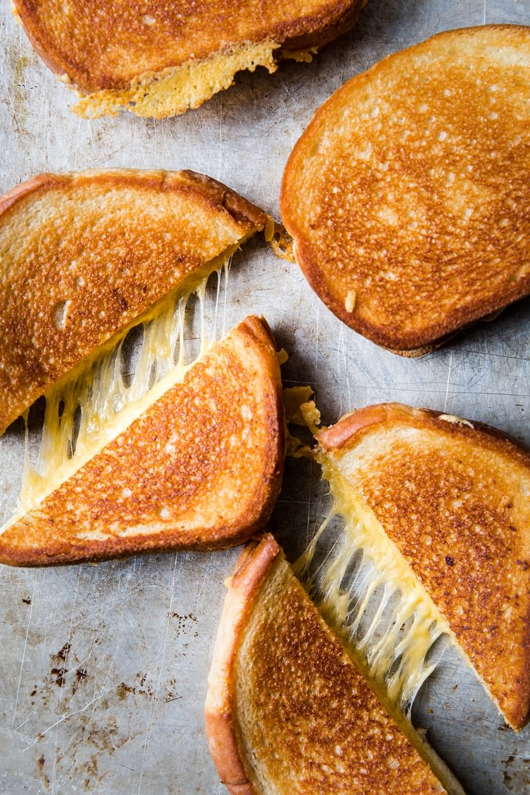

The Perfect Grilled Cheese Recipe
Description
the Best Bread for Grilled Cheese is…
White bread! Thick-sliced, if you can find it. Regular, squishy, tender white bread will crisp up beautifully in the skillet and make a toasty, nicely
neutral vehicle for all that cheese. To give you that perfect Grilled sandwitch that we all want.
Ingredients
8 Slices thick white bread
4 tbsp good mayonnaise
4 tbsp room temperature butter
1 lb Cheddar (or your favorite cheese)
Directions
1. In a small bowl, mix mayonnaise and butter until fully combined.
2. Assembly sandwiches by spreading the butter-mayo mixture on one side of each piece of bread.
3. On the inside of the bread add 1/2 cup of grated cheese and top with second piece of bread that is prepared with the same butter/mayo combo.
4. Add prepared sandwich to a cold cast iron skillet and turn heat on to low.
Carefully watch to make sure that you aren’t burning the butter-mayo, flip as
soon as one side is golden brown and continue with other side.
This process should take 8-10 min on each side. Do not rush this process or you will compromise
the crispy golden crust of a perfect grilled cheese.
5. Once both sides are golden brown, transfer to a plate and serve!